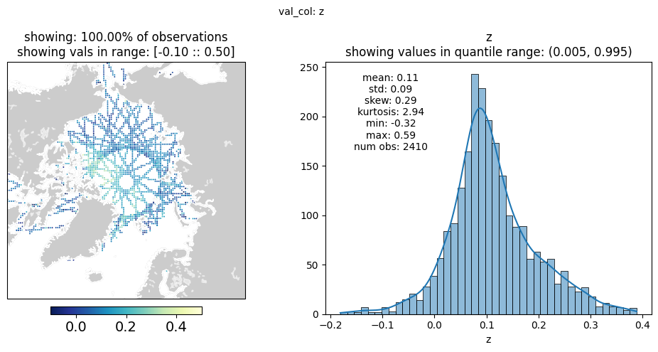
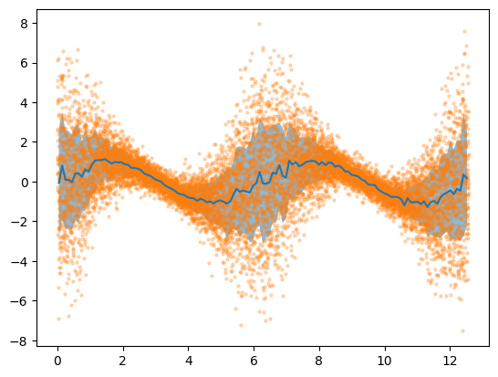

Bin Data Examples
[ ]:
import packages
[1]:
import os
import re
import numpy as np
import pandas as pd
import matplotlib.pyplot as plt
from GPSat import get_data_path
from GPSat.bin_data import BinData
from GPSat.dataprepper import DataPrep
from GPSat.dataloader import DataLoader
from GPSat.utils import WGS84toEASE2, EASE2toWGS84, cprint, stats_on_vals
from GPSat.plot_utils import plot_wrapper
parameters
[2]:
val_col = 'z'
by_cols = ['t', 'source']
val_col = val_col
x_col = 'x'
y_col = 'y'
grid_res = 50_000
x_range = [-4_500_000.0, 4_500_000.0]
y_range = [-4_500_000.0, 4_500_000.0]
lat_0, lon_0 = 90, 0
# plotting
# extent = [lon min, lat max, lat min, lat max]
extent = [-180, 180, 60, 90]
# which projection to use: "north" or "south"
projection = "north"
read in raw data
in this case from several csv files
[3]:
df = DataLoader.read_flat_files(file_dirs=get_data_path("example"),
file_regex="_RAW\.csv$",
col_funcs={
"source": {
"func": lambda x: re.sub('_RAW.*$', '', os.path.basename(x)),
"filename_as_arg": True
}
})
# convert lon, lat, datetime to x, y, t - to be used as the coordinate space
# - these could be included in the col_funcs
df['x'], df['y'] = WGS84toEASE2(lon=df['lon'], lat=df['lat'], lat_0=lat_0, lon_0=lon_0)
df['t'] = df['datetime'].values.astype("datetime64[D]").astype(float)
----------------------------------------------------------------------------------------------------
reading files from:
/home/runner/work/GPSat/GPSat/data/example/
that match regular expression: _RAW\.csv$
'read_from_multiple_files': 0.923 seconds
Statistic on Values
it is useful to look at summary statistic on values to get an idea how it should be processed
[4]:
sov = stats_on_vals(vals=df[val_col].values, name=val_col)
cprint("-" * 10, "BOLD")
cprint(f"Stats on '{val_col}' column", "OKCYAN")
cprint(sov, "OKBLUE")
'stats_on_vals': 0.330 seconds
----------
Stats on 'z' column
z
measure z
size 1174848
num_not_nan 1174848
num_inf 0
min -16.7965
mean 0.128416
max 16.7093
std 0.186566
skew -10.912819
kurtosis 890.268297
q0.010 -0.3732
q0.050 -0.1387
q0.100 -0.0485
q0.200 0.0322
q0.300 0.0767
q0.400 0.1101
q0.500 0.1394
q0.600 0.1686
q0.700 0.2011
q0.800 0.2424
q0.900 0.3067
q0.950 0.3632
q0.990 0.4775
DataPrep.bin_data_by: 2d binning
[5]:
bin_ds = DataPrep.bin_data_by(df=df.loc[(df['z'] > -0.35) & (df['z'] < 0.65)],
by_cols=by_cols,
val_col=val_col,
x_col=x_col,
y_col=y_col,
grid_res=grid_res,
x_range=x_range,
y_range=y_range,
return_df=False)
'bin_data_by': 1.624 seconds
plot results
[6]:
# bin_data_by returns a Dataset, unless return_df = True
# - drop nans and reset index
bin_df = bin_ds.to_dataframe().dropna().reset_index()
# this will plot all observations, some on top of each other
bin_df['lon'], bin_df['lat'] = EASE2toWGS84(bin_df['x'], bin_df['y'],
lat_0=lat_0, lon_0=lon_0)
mid_t = np.median(bin_df['t'])
fig, stats_df = plot_wrapper(plt_df=bin_df.loc[bin_df['t'] == mid_t],
val_col=val_col,
max_obs=500_000,
vmin_max=[-0.1, 0.5],
projection=projection,
extent=extent)
plt.show()
'stats_on_vals': 0.003 seconds
plotting pcolormesh...
'plot_pcolormesh': 0.042 seconds
plotting hist (using all data)...
'plot_hist': 0.066 seconds
'plot_wrapper': 0.196 seconds
/opt/hostedtoolcache/Python/3.11.9/x64/lib/python3.11/site-packages/cartopy/io/__init__.py:241: DownloadWarning: Downloading: https://naturalearth.s3.amazonaws.com/50m_physical/ne_50m_land.zip
warnings.warn(f'Downloading: {url}', DownloadWarning)
/opt/hostedtoolcache/Python/3.11.9/x64/lib/python3.11/site-packages/cartopy/io/__init__.py:241: DownloadWarning: Downloading: https://naturalearth.s3.amazonaws.com/50m_physical/ne_50m_coastline.zip
warnings.warn(f'Downloading: {url}', DownloadWarning)
/opt/hostedtoolcache/Python/3.11.9/x64/lib/python3.11/site-packages/cartopy/io/__init__.py:241: DownloadWarning: Downloading: https://naturalearth.s3.amazonaws.com/50m_physical/ne_50m_lakes.zip
warnings.warn(f'Downloading: {url}', DownloadWarning)

apply 1-d binning
demonstrated by a toy example
[7]:
# -
# generate toy data
# -
N = 10001
np.random.seed(0)
# tf.random.set_seed(0)
# Build inputs X
X = np.linspace(0, 4 * np.pi, N)[:, None] # X must be of shape [N, 1]
# Deterministic functions in place of latent ones
f1 = np.sin
f2 = np.cos
# Use transform = exp to ensure positive-only scale values
transform = np.exp
# Compute loc and scale as functions of input X
loc = f1(X)
scale = transform(f2(X))
# Sample outputs Y from Gaussian Likelihood
# - scale is standard deviation
Y = np.random.normal(loc, scale)
# store data in DataFrame (bin_data_by expects DataFrame atm)
# - by is a dummy column, currently need
df_dummy = pd.DataFrame({"x": X[:,0], "y": Y[:,0], 'by': 1})
Bin 1d Data
[8]:
# TODO: just use bin_data ? needs to be modified
bdf = DataPrep.bin_data_by(df=df_dummy,
x_col='x',
val_col='y',
by_cols='by',
# bin_statistic=[np.mean, np.var, len],
bin_statistic=["mean", "std", "count"],
x_range=[0, 4 * np.pi],
grid_res=0.1,
bin_2d=False,
return_df=True)
bdf.reset_index(inplace=True)
bdf.drop("by", axis=1, inplace=True)
'bin_data_by': 1.554 seconds
plot binned results with original obs
[9]:
plt.plot(bdf['x'], bdf['y_mean'])
# plt.fill_between(bdf['x'], bdf['y_mean'] + np.sqrt(bdf['y_var']), bdf['y_mean'] - np.sqrt(bdf['y_var']),
# alpha=0.5)
plt.fill_between(bdf['x'],
bdf['y_mean'] + bdf['y_std'],
bdf['y_mean'] - bdf['y_std'],
alpha=0.5)
# plt.plot(bdf['x'], bdf['y_mean'] + np.sqrt(bdf['y_var']))
# plt.plot(bdf['x'], bdf['y_mean'] - np.sqrt(bdf['y_var']))
plt.scatter(X[:,0], Y[:,0], s=5, alpha=0.25)
plt.show()
# -
# identify tracks - apply 1d binning
# -

BinData class
[10]:
# TODO: save data as parquet file
# useful when have large amount of data in a single hdf5 file
# - allows for reading data in by batches
parq_tmp = get_data_path("example", "tmp.parquet")
df['date'] = df['datetime'].astype('datetime64[D]')
df.to_parquet(parq_tmp, engine="fastparquet")
bin config
same parameters used by DataPrep.bin_data_by
[11]:
bin_config = {
'grid_res': 50000,
'by_cols': ['source', 'date'],
'val_col': val_col,
'bin_statistic': 'mean',
'row_select': [{'col': val_col, 'comp': '>=', 'val': -2.0},
{'col': val_col, 'comp': '<=', 'val': 2.0}],
'x_col': 'x',
'y_col': 'y',
'x_range': [-4500000.0, 4500000.0],
'y_range': [-4500000.0, 4500000.0]
}
bin data
NOTE: this class is currently a work in progress, effectively acts as a wrapper for DataPrep.bin_data_by and stats_on_vals
[12]:
bd = BinData()
# if load_by is not specified will read data in by unique by_cols (from bin_config)
bin_df, stats = bd.bin_data(source=parq_tmp,
batch=False,
bin_config=bin_config)
will bin data all at once
'data_select': 0.424 seconds
'load': 0.425 seconds
getting stats on column: z from data
'stats_on_vals': 0.255 seconds
binning data...
'data_select': 0.058 seconds
'bin_data_by': 1.771 seconds
'bin_data_all_at_once': 2.480 seconds
view results
[13]:
cprint("-" * 20, "BOLD")
cprint("bin_df:")
cprint("head", "OKCYAN")
cprint(bin_df.head(5), "OKBLUE")
cprint("dtypes", "OKCYAN")
cprint(bin_df.dtypes, "OKBLUE")
cprint("-" * 20, "BOLD")
cprint("stats:")
cprint(stats, "OKBLUE")
--------------------
bin_df:
head
y x source date z
0 -2475000.0 1125000.0 B 2020-03-06 0.181500
1 -2225000.0 -1525000.0 A 2020-03-10 0.198300
2 -2225000.0 -1425000.0 B 2020-03-01 0.231700
3 -2175000.0 -1625000.0 A 2020-03-06 -0.005200
4 -2175000.0 -1575000.0 A 2020-03-06 -0.052156
dtypes
y float64
x float64
source object
date datetime64[ns]
z float64
dtype: object
--------------------
stats:
z
measure z
size 1174848
num_not_nan 1174848
num_inf 0
min -16.7965
mean 0.128416
max 16.7093
std 0.186566
skew -10.912819
kurtosis 890.268297
q0.001 -1.087376
q0.010 -0.3732
q0.050 -0.1387
q0.100 -0.0485
q0.200 0.0322
q0.300 0.0767
q0.400 0.1101
q0.500 0.1394
q0.600 0.1686
q0.700 0.2011
q0.800 0.2424
q0.900 0.3067
q0.950 0.3632
q0.990 0.4775
q0.999 0.646315
write to file
[14]:
# bin_df.to_parquet("/path/to/binned_data.parquet", engine="fastparquet")